A ReFilter surgiu com a tentativa de reduzir um resíduo poluidor do dia-a-dia, as beatas. O nosso desejo foi criar um destino sustentável aos filtros dos cigarros através da produção de papel reciclado à base desta matéria prima. Pretendemos, não só possuir uma solução simples para um resíduo poluidor, mas também oferecer ao consumidor uma opção sustentável e inovadora.

Criámos um método de desenvolvimento de um produto à base de beatas, uma matéria-prima pouco usada em Portugal. Conseguimos assim um produto inovador, que marca a diferença no mercado.

Preocupamo-nos com a sustentabilidade, com o respeito pelos recursos naturais, com a redução progresiva da pegada ambiental dos produtos e com a riqueza distribuída de forma equitativa.

Atuamos de uma forma mais sustentável e prudente, respeitando sempre os níveis de qualidade do Ambiente e melhorando o nível de sustentabilidade de sociedade.

Regemo-nos por valores morais e éticos, queremos garantir a veracidade dos nossos valores empresariais, desenvolvendo boas relações e também a sustentabilidade e a responsabilidade social.
Lavam-se as beatas em água fria para retirara a sujidade e pós que possam estar agarrados.
Utiliza-se o hidróxido de sódio para realizar a hidrólise alcanina para separar as fibras de celulose das beatas.
Passam-se as fibras de celulose por água para retirar vestígios de reagentes que possam ter ficado retidos.
Juntam-se todas as fibras numa linha de montagem que cria a pasta de papel, seca-a e corta-la em resmas.